In de volgende secties zullen verschillende tips & tricks gegeven worden om het werken in ZyLAB ONE te vergemakkelijken.
Indien de opties beschreven in dit topic niet voor u beschikbaar zijn in Excel heeft u waarschijnlijk een oudere versie. Hoe u de inventarislijst correct kunt openen met een oudere versie van Excel vindt u bij Inventarislijst openen in oudere Excel versies.
Om de inventarisatielijst correct weer te geven opent u deze met Excel. In eerste instantie zal deze er niet helemaal goed uitzien. Klik bovenin op Data, vervolgens links op Get Data, vervolgens op From File, en dan From Text/CSV.
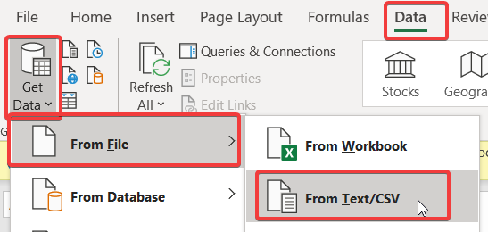
Selecteer nu in de verkenner de inventarisatielijst waar u deze hebt opgeslagen.
Klik vervolgens op Load.
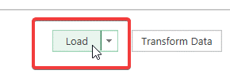
De inventarisatielijst wordt nu correct weergegeven.
Open een nieuw, leeg Excel bestand.
Klik op Data en vervolgens op From Text.
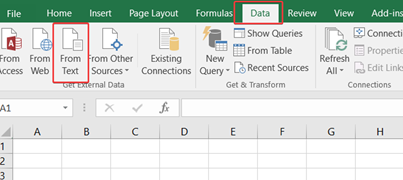
Selecteer de inventarisatielijst uit de productie in de verkenner. Het kan zijn dat u de inventarisatielijst eerst op een makkelijk bereikbare plek moet plaatsen, zoals uw bureaublad of mijn documenten.
Vink Delimited aan. Klik vervolgens op Next >.
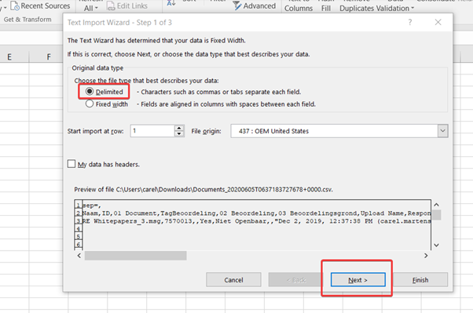
Vink Comma aan en klik op Next >.
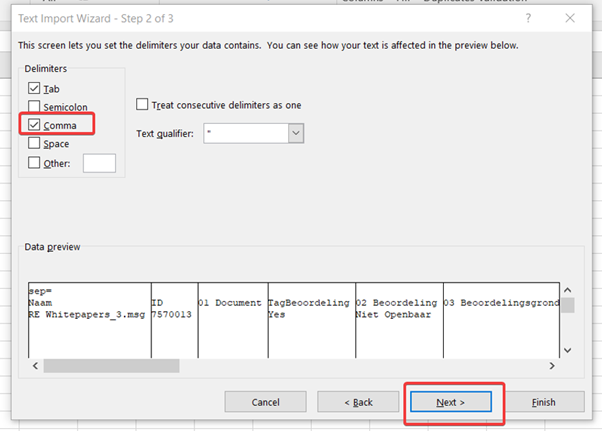
Klik nu op Finish.
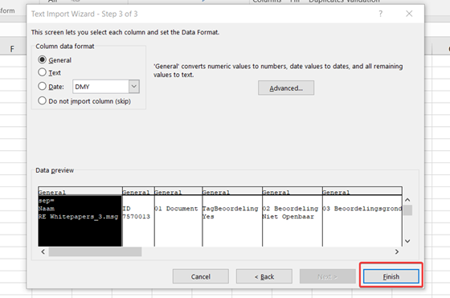
En klik nu op OK.
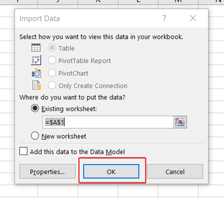
Lange email conversaties kunnen vervelend zijn om te behandelen. Immers bevat elk mailbericht de gehele voorgeschiedenis aan mailverkeer, hierdoor ontstaan enorm veel duplicaten. Wanneer de geschiedenis niet op de juiste manier behandeld wordt is er een kans dat er niet overal hetzelfde wordt afgelakt. In deze sectie wordt een wijze van behandeling uitgelegd waardoor zo min mogelijk emails uit een email conversatie behandeld hoeven te worden zonder informatie te missen.
Ter voorbeeld wordt de volgende email conversatie gebruikt:
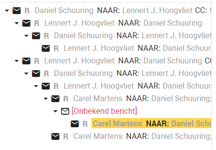
Opvallend is het mailbericht [onbekend bericht]. Dit houdt in dat dit mailbericht niet in ZyLAB upgeload is, daarom is het ook niet mogelijk dit mailbericht te openen. Echter, het is voor ZyLAB mogelijk om uit de andere mailberichten op te maken dat er tussen het voorgaande en nagaande mailbericht een ander mailbericht heeft gezeten. Omdat elk mailbericht de voorgeschiedenis bevat kunnen we het missende mailbericht alsnog achterhalen door het nagaande mailbericht te behandelen.
We kunnen uit de hierarchie van de conversatie opmaken dat er verschillende aftakkingen hebben plaatsgevonden in de mail conversatie. Dit betekent dat één mail aan meerdere personen verstuurd is, en er meerdere personen gereageerd hebben op de betreffende email. Elke reactie creeert zijn eigen aftakking. Een visualisatie hiervan zie u hieronder:
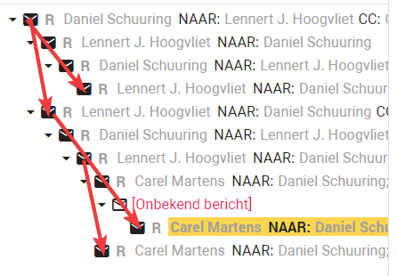
Omdat elk mailbericht de voorgeschiedenis bevat kunnen we door enkel de laatste mailberichten te behandelen van elke aftakking toch alle mailberichten behandelen. Een visualisatie ziet u hieronder:
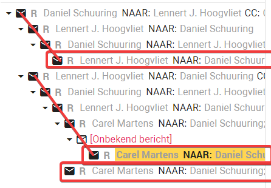
Daarnaast is het handig om alsnog het eerste mailbericht te behandelen. Zodat het aan de hand van de inventarislijst duidelijk is wat het begin is geweest van de mail conversatie. Daarnaast dienen emails waar bijlages aan zitten ook apart behandeld te worden. Er vanuit gaande dat het zevende mailbericht ook een bijlage bevat, zouden de volgende mailberichten behandeld moeten worden voor het Woo-verzoek:
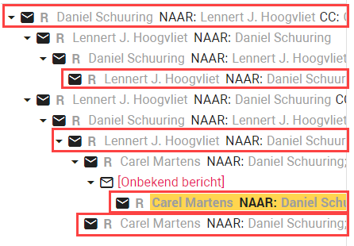
In dit specifieke voorbeeld zouden enkel 5 van de 11 mailberichten behandeld dienen te worden om alle informatie te verkrijgen.